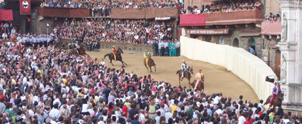

|


Ha vinto la Tartuca con Gingillo
La Tartuca con Giuseppe Zedde detto Gingillo su Già del Menhir ha vinto il Palio di Provenzano 2009.
Grande vittoria per il popolo di Castelvecchio che con uno splendido assolo conquista il cencio di Eugenia Vanni dopo 5 anni dall’ultima vittoria, conquistata nell’agosto 2004 con Luigi Bruschelli su Alesandra.
Mossa laboriosa, con Guglielmi di Vulci che per ben cinque volte chiama tutti fuori e invalida tre mosse.
Quando finalmente, dopo oltre un’ora, le Contrade trovano l’allineamento schizza fuori dai canapi la Tartuca, seguita dalla Lupa con Vittorio su Giove Deus e dalla Pantera con Scompiglio su Elfo di Montalbo.
Al primo Casato l’Onda è costretta a fermarsi per un problema ad Insomma. La Tartuca prosegue la sua corsa con un allungo che non lascia spazio alle altre Contrade.
Al primo passaggio alla mossa, scambio di nerbate tra Lupa ed Istrice, che cerca di fermare la progressione della rivale.
I due giri successivi sono dominati dalla Tartuca che con netta superiorità guadagna diverse lunghezze, andando a tagliare per prima il bandierino, lasciandosi alle spalle Oca e Lupa.
Un Palio che vede trionfare un cavallo e un fantino già vittoriosi nelle Carriere dell’anno scorso.
Già del Menhir, alla sua terza Carriera, conferma le sue qualità sul tufo e torna ad affermarsi dopo l’esordio vittorioso dello scorso luglio con Trecciolino per i colori dell’Istrice. Conferma anche per il fantino Gingillo che, alla sua decima esperienza in Piazza, conquista il suo secondo Palio dopo il trionfo del 2008 nel Bruco con Elisir Logudoro.
Curiosità: Le ultime tre volte che il Drago ha corso, ha avuto in sorte sempre il cavallo Fedora Saura (ago 2007, lug 2008, lug 2009) e sempre si è trovato di rincorsa (cfr.).
 
LA SCHEDA DI GINGILLO
LE VITTORIE DELLA TARTUCA
LE FOTO DEI DRAPPELLONI DELLA TARTUCA
COSI' I FANTINI AL CANAPE NEL 2000
LE FOTO DEGLI ARRIVI DAL 1945 A OGGI

L'ordine di entrata fra i canapi
Chiocciola - Istrice - Tartuca - Onda - Lupa - Pantera - Oca - Valdimontone e di rincorsa il Drago
Stabilizzato Iesael, recupererà la propria mobilità
«Dispiace a tutti quando accadono situazioni di questo tipo. Noi della Commissione Veterinaria siamo i primi a dispiacersene». Così il colonnello Marco Reitano, membro della Commissione e Veterinario Municipale per quanto concerne tutte le attività relative ai due Palii, questa mattina dai microfoni di Antenna Radio Esse, poco prima che i cavalli uscissero dall’Entrone, ha parlato di quanto accaduto al cavallo andato in sorte alla Civetta, Iesael.
«Siamo anche i primi ad essere chiamati in causa in queste situazioni – ha aggiunto - L’emotività, il dolore, in questo momento sono fortissimi, quindi è normale che si cerchino cause. Però si può dire che il cavallo non era allenato, che non era visitato… In realtà, andando oltre l’emotività - comprensibile in questi casi - possiamo dire che noi facciamo visite accurate e tutte uguali ai cavalli e che non c’erano risultanze tali da evidenziare problematiche. E’ il caso che sta nella vita di un atleta, come nella vita di tutti gli atleti, e può succedere che ci sia una pressione in corsa insieme ad un processo di torsione».
«Il cavallo ha riscontrato una frattura scomposta – ha spiegato il colonnello - ieri sera è stato immediatamente stabilizzato e gli è stato applicato il gambaletto che ha reso possibile al cavallo riprendere la propria mobilità. Poi è stato operato, sempre ieri sera. A questo punto occorre aspettare, recupererà la propria mobilità, anche se sul livello che sarà recuperato al momento non ci possiamo esprimere».
Comunicato stampa diramato dalla Contrada della Civetta
La Contrada Priora della Civetta è stata privata della possibilità di partecipare alla Carriera del 2 Luglio 2009.
Dopo alcune ore dal tragico incidente occorso a Iesael la Contrada non riesce a capire a chi sia da addebitare la responsabilità dell'episodio che ha generato un dolore straziante che va ad aggiungersi ad altri occorsi in anni recenti anche ad altre Contrade e alla Civetta nel 2007.
Il cavallo, giunto nella stalla della Contrada, ha confermato “l'andatura corta” dichiarata dalla stessa equipe veterinaria, ma da questa ritenuta del tutto ininfluente ai fini della idoneità.
Resta pertanto difficilissimo ritenere che la causa possa essere solo la fatalità, soprattutto quando l'incidente si è verificato in circostanze di assoluta sicurezza e normalità di corsa.
La Contrada ritiene che sia necessario ed urgente ripensare alla salvaguardia della salute dei cavalli e alla tutela della Festa nel rispetto dei fondamentali interessi dei Popoli delle Contrade, ripristinando al più presto la fiducia indispensabile verso coloro che sono preposti a gestire il meccanismo della selezione dei cavalli.
Avere a disposizione un elevato numero di soggetti periodicamente monitorati dall'equipe veterinaria non ha impedito il ripetersi di situazioni in cui non si è potuto disporre di sufficienti garanzie sia per la salute dei cavalli che per il sacrosanto diritto dei Popoli delle Consorelle a non veder vanificato il loro impegno negli anni per cause completamente indipendenti dalla loro responsabilità.
Nel riservarci ulteriori approfondimenti sui temi sopra accennati la Contrada intende manifestare il proprio sdegno a partire dal Corteo storico astenendosi dall'effettuare le consuete sbandierate.
Silvano Mulas si chiamerà Voglia
 |
Sarà Silvano Mulas l'unico fantino a esordire in questo palio di luglio con il soprannome di Voglia. Nato a Dorgali (NU) il 23 marzo 1984,
vanta numerose vittorie nelle corse regolari e la partecipazione per il giubbetto dell'Istrice
alla seconda prova del luglio 2008 con il cavallo Già del Menhir.
QUANDO LE CONTRADE HANNO FATTO DEBUTTARE UN FANTINO
I DEBUTTI DEI FANTINI
|
La Chiocciola vince la Provaccia
Si corre in 9 dopo l’infortunio alla Prova Generale subito da Iesael, il cavallo della Civetta, che questa sera non sarà in Piazza per la Carriera. La mossa matura subito, partono bene Tartuca, Lupa e Drago all’esterno. Gira prima a San Martino la Contrada della Tartuca, che viene poi superata dalla Chiocciola che va a vincere.
Iesael non correrà il Palio
Un infortunio all’anteriore destro subìto dal cavallo Iesael durante la Prova Generale compromette la partecipazione alla contrada della Civetta.
Dalla nota diffusa dall'amministrazione comunale si apprende infatti che:
"Durante la prova generale del Palio di luglio 2009, immediatamente dopo il superamento della curva di S. Martino del primo giro il cavallo Iesael, toccato in sorte alla Contrada della Civetta, ha manifestato un’evidente difficoltà locomotoria che lo ha costretto all’interruzione della prova. Il cavallo è stato prontamente soccorso e dopo l’applicazione di un tutore di contenimento sull’anteriore destro, per una sospetta lesione a carico di una falange, è stato trasferito alla clinica veterinaria del Ceppo per gli accertamenti diagnostici e l’eventuale terapia del caso.
Dal primo esame clinico si può affermare che la lesione appare trattabile e, pertanto, le condizioni generali del cavallo, pur non potendo partecipare al Palio di domani, non appaiono preoccupanti".
Un destino avverso quello del barbero esordiente, che domani sera non potrà fare il suo ingresso ufficiale sul tufo per la Carriera, ma soprattutto quello del popolo del Castellare, che vede sfumare così la speranza di interrompere un digiuno che dura ormai da trent’anni.
PER VEDERE QUANDO LE CONTRADE NON POTERONO PRENDERE PARTE AL PALIO

IESAEL
Alla Lupa la Prova Generale
Come già nelle precedenti prove, attimi di tensione tra i canapi, anche se questa volta la mossa è subito valida.
Partono prime Pantera, Lupa, Civetta, Onda e Chiocciola. La Lupa passa subito in vantaggio, seguita da Chiocciola, Onda e Valdimontone. Al primo San Martino la corsa della Civetta si ferma per un problema al cavallo Iesael che potrebbe mettere a rischio la partecipazione della Contrada alla Carriera.
Attimi di preoccupazione anche per la Lupa con Gianluca Fais che al Casato sbatte nel colonnino, cade da Giove Deus, ma risale subito e va a vincere la prova generale. Buona prova anche per Chiocciola e Onda.

IN PRIMO PIANO LUPA CIVETTA ONDA CHIOCCIOLA E TARTUCA
La Chiocciola vince la quarta prova
Nessuna novità per le monte, che vengono così tutte confermate. Laboriosa anche stamani la mossa con due partenze annullate.
Minisini nell'Oca di rincorsa tituba per ben due volte e per il mossiere è inevitabile dover mollare il canape. Fedora Saura un po' nervosa dentro ai canapi, mentre Già del Menhir conferma le sue qualità di grande calma all'interno dei canapi. Partono bene Pantera e Tartuca. Gingillo prova forte per un giro con Già del Menhir, quindi viene superato dalla rivale Chiocciola. Anche Ricceri si mette in luce e conferma le buone qualità di Istriceddu già dimostrate nelle prove di ieri. Con un
buon galoppo la Chiocciola va a vincere la prova. Si confermano le aspettative per un grande Palio, date le ottime qualità messe in luce da tutti i cavalli, anche quelli apparentemente meno accreditati sulla carta.
La Lupa vince la terza prova
La Lupa ha vinto la terza prova. Al canape si sono presentate le stesse dieci accoppiate di questa mattina, segno evidente che il Palio a grandi linee è ormai definito. L'Onda di rincorsa non attende molto ad entrare, ma resta piuttosto ferma al canapo, la Pantera prende subito il largo e prova forte per un giro completo. Anche il Valdimontone prova bene per un giro, poi stacca la spina e trotterella fino alla fine. Nelle retrovie si mette in luce la Lupa, che poi in seguito supera anche la Pantera e Trecciolino con l'Istrice, che prova metà dell'ultimo giro. Bene anche il Drago che testa brevemente la cavalla e Chiocciola. Alla fine la vittoria sarà di Gianluca Fais su Giove Deus.
Al termine della prova, i contradaioli di Tartuca e Chiocciola si sono fronteggiati per pochissimi secondi per poi far partire un tafferuglio. I "cazzotti" sono durati per pochi istanti, quando sono accorsi i funzionari della Polizia Municipale a rimettere a posto l'ordine, anche se i due gruppi di contradaioli hanno continuato per un po' a fronteggiarsi.

questo l'ordine al canape della prova con relative accoppiate:
Oca con Luca Minisini detto De’ su Indira Bella
Istrice con Luigi Bruschelli detto Trecciolino su Elisir Logudoro
Chiocciola con Alberto Ricceri detto Salasso su Istriceddu
Drago con Giovanni Atzeni detto Tittia su Fedora Saura
Valdimontone con Valter Pusceddu detto Bighino su Ilon
Tartuca con Giuseppe Zedde detto Gingillo su Già del Menhir
Lupa con Gianluca Fais detto Vittorio su Giove Deus
Civetta con Andrea Mari detto Brio su Iesael
Pantera con Jonatan Bartoletti detto Scompiglio su Elfo di Montalbo
di rincorsa Onda con Silvano Mulas su Insomma
La Civetta vince la seconda prova posticipata alle 11
La Civetta vince la seconda prova, dopo due mosse annullate e un canape abbassato dal mossiere perchè il cavallo del Valdimontone si era impigliato nel canape stesso.
Partono bene il Valdimontone, Tartuca e Pantera. Quest'ultima rimane in testa per due giri, poi è la Civetta che passa al
comando e va a vincere una prova corsa da tutti ad un'andatura assai leggera, a causa di una pista non proprio perfetta.
Posticipare la prova mattutina alle 11.00, pare non sia mai accaduto prima di oggi.
Il rinvio è stato deciso dal Sindaco, dai Deputati della Festa e dai Capitani, che questa mattina si sono riuniti per valutare le condizioni del tufo dopo gli acquazzoni di ieri. La prova è stata rinviata per consentire alla terra di asciugarsi e garantire, così, la massima sicurezza a cavalli e fantini.
Annullata la prima prova
Lo ha annunciato la bandiera verde esposta alle trifore del Palazzo Pubblico. L’acquazzone che da ore si sta abbattendo sulla città ha, infatti, reso inagibile la pista e compromesso così lo svolgimento della prova di questa sera. Il Sindaco di Siena Maurizio Cenni, sentiti i pareri dei competenti uffici comunali e dei Deputati della Festa, ha quindi deciso di annullare l'appuntamento. Fortemente a rischio anche la seconda prova di domattina. Le previsioni meteo del Lamma Toscana, infatti, prevedono schiarite, ma solo per domani pomeriggio.
L'assegnazione dei cavalli
Cliccando sul nome del cavallo si aprirà la scheda a lui relativa.
C' è un ordine tradizionale con cui le Contrade prendono posto tra i canapi
durante le prove e quest'ordine viene dettato dall'art.62 del Regolamento del Palio.
 Prima prova:
Prima prova:
Ordine nel quale le Contrade furono estratte a sorte per partecipare al Palio.
Seconda prova:
Ordine suddetto invertito.
Terza prova:
Ordine d'estrazione della Contrada per l'assegnazione dei cavalli.
Quarta prova:
Ordine suddetto invertito.
Quinta prova:
Ordine avuto dai cavalli per procedere alla loro assegnazione.
Sesta prova:
Ordine suddetto invertito.
Tutto sulle batterie
Il primo atto di Provenzano ha riservato tantissime cadute e colpi di scena. Era tanto tempo che non si assisteva a tante cadute per la tratta come è successo questa mattina. Alla prima batteria, al primo giro a San Martino, Antonio Siri cade rovinosamente da Guschione travolgendo nella dinamica anche Ygor Argomenni su Genoma. Con due cavalli scossi, tra cui Guschione senza redini, l'ottimo Ilon prende la testa, ma Paride De Mauro al secondo giro assaggia anche lui il tufo. Finisce con lo spunto di Ilon scosso la prima batteria.
Seconda corsa invece molto lenta e senza grosso impegno da parte di cavalli e fantini. L'unico veramente a provare è Giosuè carboni su Insomma, cavalla che alle prove di notte aveva disarcionato al Casato Alessio Pollioni.
Terza batteria in odore di Palio, con otto cavalli desiderosi di essere presenti in Piazza il 2 luglio. A spuntarla è Giove Deus, che conduce dall'inizio alla fine, seguito da un ottimo Fanè montato da Antonio Siri autore i una pregevole rimonta. Buono lo spunto anche di Gammede. Da registrarsi un abbassamento di canape a vuoto dopo una forzatura.
Equilibrio totale nell quarta batteria, con Far West e Garin che lottano tutto il primo giro per le posizioni di testa, fino a che Garin non disarciona tra la mossa e la Fonte Adrian Topalli. Far West prosegue incontrastao la sua marcia a ritmo non forsennato ma comunque competitivo.
I sei della batteria di recupero scendono sul tufo con la speranza di essere presenti, tra l'altro tra i sei Indira Bella ha già corso il Palio e di conseguenza potrebbe davvero ritrovare posto al canape. A fare le bizze invece è Garin, che al primo giro a San Martino ripete ad Adrian Topalli lo scherzetto di dieci minuti prima, facendolo di nuovo cadere. A vincere la batteria è Antonio Siri su Guschione, fresco di riscatto dopo la caduta della prima batteria.
Trentatrè cavalli ammessi alla Tratta, pochissimi cinque anni
Oltre a Choci, Delizia De Ozieri, Elfo Di Montalbo, Elisir Logudoro, Ernesto Bello, Fedora Saura, Gia' Del Menhir, Giordhan, Giove Deus, Guess, Ilon, Indira Bella e Istriceddu,ammessi di diritto, altri 20 cavalli tra i quali scegliere il lotto dei 10 che saranno in Piazza il 2 luglio.
1 CHOCI Alessandro Tozzi
2 DELIZIA DE OZIERI Marcello Rosi
3 DOVIZYA Marcello Rosi
4 ELFO DI MONTALBO Francesca Manfredi
5 ELISIR LOGUDORO Andrea Mari
6 ERNESTO BELLO Giancarlo Addolorati
7 FANE’ Simone Berni
8 FAR WEST Raffaele Bei
9 FEDORA SAURA Augusto Posta
10 FIORE DE P.ULPU Carlo Brocci
11 FLOBER Luca Veneri
12 FRORIA Federica Luchetti
13 GAMMEDE Francesco Maria De Mauro
14 GARIN Alberto Ricceri
15 GENOMA Francesco Passalacqua
16 GIA’ DEL MENHIR Massimo Coghe
17 GINGER DE MORES Luca Francesconi
18 GIORDHAN Michela Gori
19 GIOVE DEUS Nicola Sandroni
20 GUADALUPE Lucia Toto
21 GUESS Fabio Romanelli
22 GUSCHIONE Simone Berni
23 IESAEL Salomone Benveniste
24 ILON Jacopo Bonucci
25 INDIRA BELLA Fabio Fioravanti
26 INSOMMA Fabio Romanelli
27 IRON RIVER Simone Santi
28 ISTEMMA Roberto Danesi
29 ISTRICEDDU Serena Butteri
30 ITALIANA DE SEDINI Sonia Catania
31 LAMPO DE AIGHENTA Marco Raveggi
32 LO SPECIALISTA Fabio Fioravanti
33 LU MUTU DI GALLURA Niccolino Floris
Tutto sulle prove di notte
Il tempo è clemente, concedendo una limpidissima giornata di sole. I cavalli che iniziano a fare la propria presenza in Piazza del Mercato dalle 4,45 del mattino non sono tra i favoriti, ma si candidano in tanti per un posto tra i dieci che correranno il prossimo Palio. Alle 5,30, minuto più minuto meno, si comincia con dodici batterie.
Lo svolgimento delle prove di notte vede le cadute di Dino Pes da Legale e l'infortunio a Massimo Donatini a causa di un San Martino preso troppo stretto da Istemma, il tutto nella terza batteria. L'altra caduta è di Alessio Pollioni da Insomma durante l'ottava batteria. Le batterie si sono svolte con il consueto serio impegno comandato dai veterinari, con qualche rischio preso anche oltre le possibilità di cavalli e fantini. Galoppi veri, senza stare a guardare che solo da domani si faranno i conti per davvero.
Soddisfatto si è dimostrato il Sindaco Maurizio Cenni, che ha dichiarato: "il protocollo equino fa sì che i cavalli possano prima fare due anni di esperienza e poi poter correre il Palio. I cavalli arrivano in Piazza al picco della propria carriera e con questo sistema si garantisce un ricambio costante e di sempre maggiore qualità del parco cavalli". In effetti, 124 iscritti alla previsita e 86 cavalli ammessi tra prove di notte e tratta sono numeri strabilianti.
Ha chiarito invece l'esclusione di Dostoevskij il suo proprietario Giuseppe Zedde: "non era al 100%", ha detto lapidario.
Chiarito dunque l'enigma delle previsite che ha fatto un po' parlare tutti, quello di Dostoevskij. Tra i 73 soggetti oggi presenti alle prove di notte, 23 saranno sicuramente scartati perchè non in età da Palio. Gli altri invece aspirano ad un posto tra i circa 35 che saranno ammessi alla tratta. In giornata la lista degli ammessi, con il definitivo quadro dei cavalli e la possibilità di iniziare a pensare al possibile lotto dei dieci soggetti che domani saranno assegnati alle Contrade.
La presentazione del drappellone
 |
Piace ai contradaioli il Cencio di Eugenia Vanni, presentato nel Cortile del Podestà dal sindaco Maurizio Cenni e da Marco Pierini. Un Drappellone – si legge nella nota del Comune di Siena – “estremamente elegante e raffinato, in cui la Madonna, quasi una fanciulla, ha i tratti tipici dei volti femminili del nostro Trecento. Un ovale delicato, il sorriso appena abbozzato, quel tanto da illuminare la parte alta del drappo di seta dove il colore azzurro degli occhi della Vergine è ripreso per sfumare in una tenue tavolozza celeste-verde e fondersi, amabilmente, con l'oro e l'argento, che dominano insieme al bianco e nero della Balzana”. “La giovane artista senese – aggiunge la nota - ha saputo cogliere appieno il significato del 700° anniversario del Costituto senese al quale è dedicato il Palio: la traduzione in volgare delle norme e leggi che regolavano la vita pubblica nella Siena del 1309. Un unicum nella storia medioevale sia per la modernità dei contenuti che per la volontà di far conoscere e diffondere i diritti e i doveri dei cittadini, tutti, compresi quelli che non conoscevano il latino. “Art. 1 - si legge sul lato sinistro del drappo - il Comune di Siena concorre a garantire nell'ambito delle proprie competenze l'affermazione dei diritti delle persone quali la libertà, l'uguaglianza e la pari dignità ed opera per rimuovere gli ostacoli di ordine economico, sociale e culturale che ne impediscono il pieno esercizio, sostiene il valore della vita nelle sue molteplici espressioni (…)”. Eugenia Vanni non solo ha riportato i valori salienti dello Statuto del Comune di Siena, ma ha ampliato i concetti trasferendoli, direttamente, all'interno del Palazzo Comunale, raffigurato in pianta subito sotto l'immagine della Madonna. Sull'altro lato, in verticale, i simboli delle Contrade, quasi in negativo, senza i colori dell'araldica, come a non voler far emergere il cromatismo classico, ma l'essenza pura di una tradizione che nel tempo ha trovato tanti punti di contatto e condivisione con le scelte istituzionali che nei secoli hanno contraddistinto la città di Siena”. “Originale – conclude la nota - anche la parte inferiore con la riproposizione dell'ingranaggio che tende il canape, dipinto parallelamente al bestiario contradaiolo, un'abile simulazione della mossa richiamata da pennellate color tufo, ma anche dai momenti che, immediatamente, la precedono: la sbandierata finale prima della corsa”.
“Eugenia Vanni – ha commentato il sindaco di Siena, Maurizio Cenni - cerca in questo Cencio di dar conto di significati e segni, le regole ed i meccanismi della festa che ne sono parte vitale e importante, la pista, il canape, l'asta del Palio, la stella e le regole basilari della civile convivenza. Con eleganza e inventiva”.
”Appena l'ho veduto – ha aggiunto il primo cittadino - ho riflettuto sul lavoro concettuale preparatorio che si intuisce e sono rimasto stupito perché ho trovato nella realizzazione freschezza e al tempo stesso cura, l'idea e la sua trasposizione sulla seta come una sorta di magia che si sprigiona dalla mente e dalla mano dell'artista”. “Davvero – ha concluso Cenni - un drappellone che sarà caro a noi senesi, stasera a tutti, sicuramente, poi ad un solo popolo, come sempre”.
Ad accompagnare la presentazione del Drappellone, quella del Masgalano, realizzato da Aldo Agnini e offerto dall'Associazione Costone Ricreatorio Pio II. “Un Masgalano – si legge nelle nota del Comune - molto particolare, con una meridiana che misura il passare del tempo, quello del Palio. Ore XVIII sfila il Corteo Storico. Ore XIX ingresso del Masgalano. Ore XX la corsa.
La scultura, infatti, che ha la forma di Piazza del Campo, da cui svetta la ripida piaggia del Costone, è segnata, in rilievo, dalle ore che scandiscono la Carriera, e il protagonista, il cavallo, come uno stilo, proietta l'ombra del sole.
I metalli, fusi dall'artigiano Antonio Benocci, e usati dall'artista, sono l'argento, lucidato a specchio, e il rame, satinato, per creare un affascinante gioco di luci.
In rilievo la figura di monsignor Nazareno Orlandi, con i suoi ragazzi, impareggiabile educatore e fondatore del Costone”.
“Due opere – ha concluso Cenni - che analizzano la storia della città, come si può ben vedere, a così tanti secoli di distanza e che hanno in comune quel tratto di innovazione che ha salvaguardato la città dal farsi irretire dal suo stesso peso, due opere che adesso vengono consegnate alla città perché rifletta, ricordi e continui ad essere aperta, trasparente e solidale impegnandosi nell'investimento costante verso le future generazioni, anche quando tutto sembra spingere solo alla passione. Ma essa, ricordiamolo sempre, si può sprigionare autentica e responsabile solo perché è frutto della nostra storia, delle nostre tradizioni, non invenzione o cedimento alle mode dei tempi ma radice vera”.
|
Le nomine per il Palio di luglio
Giorgio Guglielmi di Vulci sarà di nuovo mossiere per il prossimo Palio del 2 luglio, lo ha deciso la Giunta del Comune di Siena che ha effettuato nella seduta di mercoledì 3 giugno 2009, le nomine in vista del Palio di Provenzano.
Oltre alla conferma di Guglielmi di Vulci, la Giunta ha nominato i Deputati della Festa, che saranno Lorenzo Bassi (Leocorno), Massimo Brogi (Torre), Roberto Paolini (Aquila).
Marco Giovannetti (Nicchio), Massimo Falchi (Bruco) e David Lucchesi (Giraffa) sono stati nominati Ispettori della Pista, mentre Alessandro Del Porro, Mario Fusai e Roberto Saladini saranno i Giudici della Vincita.
Franco Sodi è stato infine nominato Maestro di Campo.
I DEPUTATI DELLA FESTA
GLI ISPETTORI DI PISTA
I GIUDICI DELLA VINCITA
Musei di Contrada aperti per il Costituto
La notizia era già stata preannunciata dal Sindaco Maurizio Cenni nella presentazione delle celebrazioni del Costituto. Adesso però è arrivata anche la comunicazione alle Contrade da parte del magistrato delle Contrade. In un periodo che spazia da settembre 2009 ad aprile 2010, i musei di Contrada saranno aperti al pubblico tutti i fine settimana. Saranno organizzati dei turni di apertura, in modo da avere almeno sei musei aperti contemporaneamente. Ad ogni Contrada è stata chiesta la disponibilità per dieci sabati complessivi nel periodo dei mesi in cui tutta la città celebrerà il settecentesimo anniversario della traduzione in volgare del Costituto senese.
I MUSEI DELLE CONTRADE


|